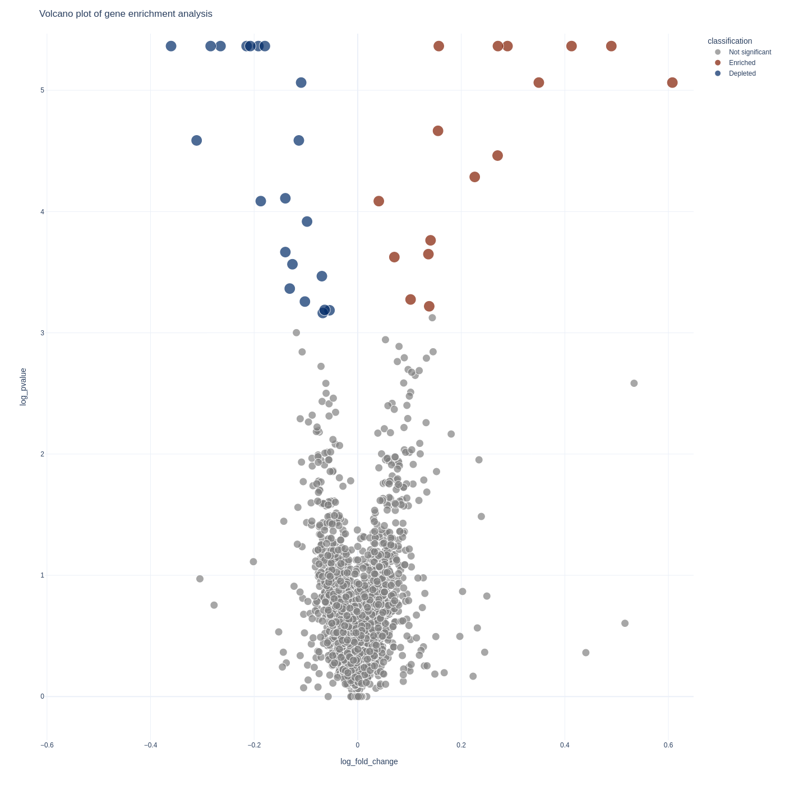
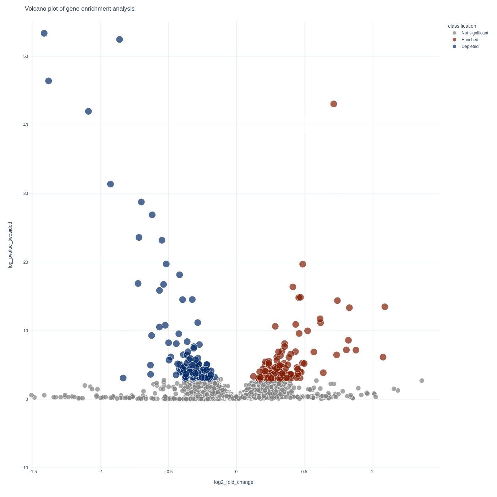

[ How Do I ... ? ]
Hello!
This is a growing collection of tutorials focused around bioinformatics, analysis, and programming in the life sciences.
Take a look at the sidebar for the topics.
If there are things you don't know how to do and want help feel free to reach out and I can write more tutorials or clear up confusing information.
CRISPR Screening
So you just ran a CRISPR screen and got your sequencing files back - what next?
The analysis follows a few steps:
- Mapping your sequencing reads to your reference library
- Differential expression of guide RNA abundances
- Aggregation of guide differential expression into differential expression of genes
- Vizualization and interpretation
Counting sgRNA abundance
Tools Needed
For this step of the analysis we'll need two different tools:
Each of these tools has their own documentation (fxtools and sgcount) for more detailed usage - but I will describe everything you need for your analysis here.
Installation
If you've never used any rust tools before - you will need to install cargo
the rust package manager.
# installs `cargo`
curl --proto '=https' --tlsv1.2 -sSf https://sh.rustup.rs | sh
Then we can install these tools easily with cargo
cargo install fxtools
cargo install sgcount
You can validate that they installed with the following:
fxtools --version
sgcount --version
Reference Library
Reference library format
You will need to identify what your reference library is.
In most cases this is a either a csv or a fasta file of sgrna names and sequences.
The input we expect should be a fasta file of the sgrna library.
Here is an example of what that looks like:
>lib.0
ATAGCCCGGCGGTCTGCTGG
>lib.1
TAAGGCACTATAGCAATGAG
>lib.2
GTAGATAAAACGTGTGGCCC
>lib.3
AAGGCGACCATCTACCCTTG
Processing reference library
There are a few processing steps that we will perform to validate that the
reference library is in the expected format and without errors.
Then we will generate an sgrna -> gene mapping file.
Uppercase
We will first convert the fasta to fully uppercase
fxtools upper -i <your_fasta.fa> -o upper.fa
Unique
We will then identify any duplicate sequences and remove them from the analysis.
fxtools unique -i upper.fa -o uniq.fa -n ambiguous.fa
sgRNA to gene mapping
If your sgrna library is named predictably of the form: <gene>_<information>...
we can automatically generate the sgrna to gene mapping with fxtools
fxtools sgrna-table -i uniq.fa -o g2s.txt
Variable regions
This next step will not apply to everyone - and it depends on whether your reference library is purely the variable region of your guides or if it also contains the constant adapter sequences.
Generally if your sequences are longer than about 23bp then your adapater sequence is still on. You can validate this by seeing if all your sequences share either the same prefix or suffix.
If so - we will need to remove those constant regions and just operate with the variable region.
We can use fxtools for this:
fxtools extract-variable -i uniq.fa -o uniq.var.fa
Guide Counting
Now that we have prepared our reference library we are ready
to map our records with sgcount.
Running sgcount
sgcount \
-l uniq.fa \
-i sample_a.fq.gz sample_b.fq.gz sample_c.fq.gz sample_d.fq.gz \
-n a b c d \
-t 4 \
-g g2s.txt \
-o mapping.tab
In the above command we are:
- providing our reference library (
uniq.faoruniq.var.fa) generated previously. - providing our
fastqfiles representing our sgrna library to the-iflag, - providing an optional custom renaming of those files with the
-nflag, - stating we will be using 4 threads with the
-tflag, - providing our gene to sgrna mapping with the
-gflag, - and writing our results to the output file
mapping.tabwith the-oflag.
Thats it! Once it finishes we're done with this step.
More information
For more detailed information on optional arguments to this check out the sgcount documentation or for information on how it works at sgcount implementation
Differential Expression
Now that we have finished mapping our reads we are ready to perform differential expression.
The following step applies for simple screens or 1-dimensional screens which are generally of the form:
sample_low_1
sample_low_2
sample_high_1
sample_high_2
Note: More complicated schemas For more complicated schemas I recommend using DESeq2 for sgRNA expression then aggregating gene-level information with sgagg.
Installation
For this analysis we will need to use crispr_screen.
We can install it easily with the rust package manager cargo
cargo install crispr_screen
Usage
To run our analysis we just use the following command:
crispr_screen test \
-i mapping.tab \
-c sample_low_1 sample_low_2 \
-t sample_high_1 sample_high_2
This will create 2 output files results.gene_results.tab and results.sgrna_results.tab
which reflect the differential expression at the gene and sgrna level respectively.
More Information
This will perform the default enrichment analysis - but for more details or alternative analysis methods check out the crispr_screen documentation.
Visualization
Now we come to the best part - looking at your results!
If you're proficient in python or R this step can be skipped and you can
roll your own visualization method with the results.gene_results.tab and
results.sgrna_results.tab dataframes.
But if you're looking for a quick visualization toolkit you can use my tool
screenviz
Installation
You can install it straight from github with the python package manager pip
pip install git+https://github.com/noamteyssier/screenviz
Usage
Gene Analysis
To visualize your gene-level results you can use the screenviz gene subcommand:
screenviz gene -i results.gene_results.tab
This will write the visualization to a file gene_volcano.html which you can open
in your favorite browser to interact with:
firefox gene_volcano.html

sgRNA Analysis
To visualize your sgrna-level results you can use the screenviz sgrna subcommand:
screenviz sgrna -i results.sgrna_results.tab
This will write the visualization to a file sgrna_volcano.html which you can open
in your favorite browser to intract with:
firefox sgrna_volcano.html

CROP-Seq
Introduction
This section is for those starting their analysis of CROP-seq datasets. It will focus on taking your sequencing data to numerical data and show you how to install what you need, align your reads, and assign all cells carrying an sgRNA to their respective guide.
Overview
A brief overview of what you will do:
-
Prepare your environment for the analysis
- Installation
- Directory Management
-
Sequencing Alignment
- Aligning to the transcriptome
- Aligning to the sgRNA library
-
sgRNA Assignment
- Statistically assigning cells to sgRNAs
- Intersecting 10X and sgRNA library into a single dataset.
What to do next
From there you will be able to use other tutorials written elsewhere for the single-cell analysis.
Some helpful links to those below:
Installation
There are many tools that you will need to use for the purposes of this analysis. These tools will require you to have a basic understanding of package management and tool usage at the command line, python, and R.
There are many resources out there for how to install specific packages so I will not spend too much time on the details of installation.
Mandatory Note
I highly recommend creating a new conda environment for the purposes of only this analysis.
As you generate new datasets you can copy this environment over to them, but as you make changes you should leave this one unchanged so that you can always come back to the same analysis without any unexpected quirks.
Commandline Tools
- conda
- Used for environment management
- kallisto bustools
- Used for sequence alignment to the transcriptome
- kallisto
- is the core tool for pseudoalignment and pseudoalignment reference building
- a version of this will be packaged into kallisto-bustools but if you don't want to search for the binary you can just install this separately
- bustools
- a tool for interacting with
*.busfiles which are used to organize and interact with single-cell data results. - Some specifications about the BUS File Format
- a version of this will be packaged into kallisto-bustools but if you don't want to search for the binary you can just install this separately
- a tool for interacting with
- jupyter
- Used for generating an interactive environment to explore your data (overview)
Python Modules
- scanpy
- Used for single-cell analysis
- scvelo
- Used for single-cell RNA velocity analysis (Optional)
- geomux
- used for cell-guide assignment
- hgsig
- used for cluster enrichment/depletion and significance testing
R Libraries
- edgeR
- used for differential expression analysis
Environment
As mentioned previously, we will create our conda environment now and add in our modules as we need them.
Installing Conda
I recommend you install Miniconda which is a minimal installer conda. It has a very small footprint and works great.
See the installation instructions here.
Follow the above instructions and check if everything works:
conda --version
This should give you a version number of your installation.
Create Conda Environment
Now we are ready to create our conda environment for our analysis.
Make sure you only use this environment for a single analysis. Do no reuse environments between analyses since this may lead to possible versioning issues and your analysis may not be reproducible when you come back to it several months later!
conda create -n my_cropseq python=3.8
Here we are creating an environment called my_cropseq and stating that
the python version is 3.8.
You can use alternative python versioning if you want the latest and greatest features, but I found this version plays best with older modules.
Moving into and out of the environment
We can now step into our environment as follows:
conda activate my_cropseq
And we can step out as follows:
conda deactivate
Background Processing
This is a small note to mention that many of the analyis steps upcoming may take a long time to run and you may not be at your computer for their entire length.
Most often you will run this on a remote computer, so I wanted to provide a few links and a quick intro to remote screens. This is software that is optional, but very useful, so that you are not kicked off remote servers when you close your computer or if you have inactivity.
Some nice options for screens are:
There are tutorials elsewhere for how to use these, but again just wanted to mention them here so that you don't have to restart any analyses.
Sequence Processing
The first step of the analysis is taking the sequence data to numerical data. This section of the tutorial is focused on those initial steps.
There will first be two sequencing alignment steps:
- Aligning the 10X sequences to the transcriptome
- Aligning the PCR sequences to the sgRNA sequences
Then there will be an assignment step to link the 10X reads to their corresponding sgRNA.
Directory Management
Creating a project directory
The first thing we will do is make a project directory to organize the individual blocks of our analysis.
Let's first create a directory skeleton which we will then populate with some data we need to collect from other sources.
# create your root directory as well as a meta and sequence directory
mkdir -p project_name/{meta, sequence}
# create a 10X and a PCR directory within your sequence directory
mkdir -p project_name/sequence/{10X,pcr}
# create a some meta directories we will populate later
mkdir -p project_name/meta/{index,whitelist,cropseq}
You should now have a directory structure that looks like this:
project_name/
└── meta/
├── 10X_index/
├── pcr_index/
└── whitelist/
└── sequence/
├── 10X/
└── pcr/
At this point you will want to move your 10X files to the project_name/sequence/10X
directory and your enrichment PCR files to the project_name/sequence/pcr
directory so that you have the following directory structure:
project_name/
└── meta/
├── 10X_index/
├── pcr_index/
└── whitelist/
└── sequence/
└── 10X/
├── sampleX_R1.fastq.gz
├── sampleX_R2.fastq.gz
: ...
├── sampleY_R1.fastq.gz
└── sampleY_R2.fastq.gz
└── pcr/
├── sampleX_R1.fastq.gz
├── sampleX_R2.fastq.gz
: ...
├── sampleY_R1.fastq.gz
└── sampleY_R2.fastq.gz
Metadata
Whitelist
The whitelist is a set of cell barcodes you expect your reads to come from. This is usually specified by the technology and can be found online.
Here you can find the 10Xv3 cell barcodes in my github mirror. But you can also find them in your installation of CellRanger or kallisto.
Note:
You will use the same whitelist for both the 10X sequences and the PCR sequences as they come from the same set of cells. This step is not required if you are aligning with kallisto because it can provide you with the same whitelist. But it will save space to just provide this file as otherwise it will write to disk the same whitelist for each sample you process
# Download the 10X v3 Whitelist from my github mirror
wget \
https://github.com/noamteyssier/10x_whitelist_mirror/raw/main/3M-february-2018.txt.gz \
project_name/meta/whitelist/3M-february-2018.txt.gz
Kallisto Index
The index is a kmer de-bruijn graph representation of the transcriptomic sequences you will be aligning your 10X sequences to.
Note:
If you are interested in learning more about the kallisto index I highly recommend reading the kallisto paper which describes the pseudo-alignment algorithm and the index. {{#cite bray_near-optimal_2016}}
If you are interested in building your own reference index please check out the kb tutorial
For the purposes of this tutorial we will be using a prebuilt index generated for RNA velocity analyses.
We will also be building our own index in an upcoming section so you can look at how to do that there as well.
RNA Velocity Transcriptome
Even if you are not interested in doing an RNA velocity analysis - it doesn't hurt you to align to a spliced/unspliced reference.
The counts are aggregated between the spliced/unspliced records in the downstream data, but you have an added option of observing the splice/unsplice ratio
# moving to the planned directory
cd project_name/meta/index/
# Downloading the Reference Index
kb ref \
-d linnarsson \
-i index.idx \
-g t2g.txt \
-c1 spliced_t2c.txt \
-c2 unspliced_t2c.txt
The above command will download the reference index and create the following files:
project_name/meta/10X_index/index.idxproject_name/meta/10X_index/t2g.txtproject_name/meta/10X_index/spliced_t2c.txtproject_name/meta/10X_index/unspliced_t2c.txt
These will be used in the next section when we run our 10X alignment.
Target Sequences
The cropseq.fa file here is a stand-in for the fasta formatted sequences of
your expected guide sequences.
You will want to place this under project_name/meta/pcr_index/
Filename: cropseq.fa
>rs17057051_i1
TTGTCCAGCATTCTGCTTCAATGGTTTAAGAGC
>rs17057051_i2
TTGGTCTCCATTGAAGATGTGTTGTTTAAGAGC
...
>rs1532277_i1
TTGCAGAACTCTAGCAAGACGTGGTTTAAGAGC
>rs1532277_i2
TTGGAATCTGGGCATTAGGCCCTGTTTAAGAGC
Final Directory Structure
I highly recommend you have a directory structure like the following for your project.
Downstream code will be expecting this directory structure but if you feel strongly about your own structure then it can be easily modified for your own interests.
project_name/
└── meta/
└── whitelist/
└── 3M-february-2018.txt.gz
└── 10X_index/
├── index.idx
├── t2g.txt
├── spliced_t2c.txt
└── unspliced_t2c.txt
└── pcr_index/
└── cropseq.fa
└── sequence/
└── 10X/
├── sampleX_R1.fastq.gz
├── sampleX_R2.fastq.gz
: ...
├── sampleY_R1.fastq.gz
└── sampleY_R2.fastq.gz
└── pcr/
├── sampleX_R1.fastq.gz
├── sampleX_R2.fastq.gz
: ...
├── sampleY_R1.fastq.gz
└── sampleY_R2.fastq.gz
10X Alignment
This section will cover the sequence alignment steps for the 10X sequences. It assumes you have a similar directory structure to the one described in the previous sections.
Installation
We are going to use kb-python for sequencing alignment, which is a wrapper
of the kallisto and bustools commandline tools.
# enter our conda environment (can skip if already in environment)
conda activate my_cropseq
# install kb-python via pip
pip install kb-python
# check if installation worked
kb --version
Creating your results directory
kb will create an output directory for each of the samples.
This quickly gets unwieldy, so I recommend creating a new directory
in your project to hold these data for easy access later.
From the root of your project directory run:
mkdir -p alignment/10X
Your project directory should now look like the following:
project_name/
└── meta/
└── whitelist/
└── 3M-february-2018.txt.gz
└── 10X_index/
├── index.idx
├── t2g.txt
├── spliced_t2c.txt
└── unspliced_t2c.txt
└── pcr_index/
└── sequence/
└── 10X/
├── sampleX_R1.fastq.gz
├── sampleX_R2.fastq.gz
: ...
├── sampleY_R1.fastq.gz
└── sampleY_R2.fastq.gz
└── pcr/
└── alignment/
└── 10X/
Running kb count
We can now run the alignment step which will create the cell x gene
count matrix.
We will do this using the kb count submodule of kb.
kb count \
--verbose \
--h5ad \
-t 4 \
-x 10xv3 \
-w meta/whitelist/3M-february-2018.txt.gz \
-g meta/10X_index/t2g.txt \
-i meta/10X_index/index.idx \
--workflow lamanno \
--filter bustools \
-c1 meta/10X_index/spliced_t2c.txt \
-c2 meta/10X_index/unspliced_t2c.txt \
-o alignment/10X/SampleX \
SampleX_R1.fastq.gz SampleX_R2.fastq.gz
Running multiple sequencing datasets as one sample
Sometimes you have the same sample split across multiple sequencing files.
kb can handle this easily, and the only change to the above command is to
include the path of all files under the same sample name at the end.
kb count \
--verbose \
--h5ad \
-t 4 \
-x 10xv3 \
-w meta/whitelist/3M-february-2018.txt.gz \
-g meta/10X_index/t2g.txt \
-i meta/10X_index/index.idx \
--workflow lamanno \
--filter bustools \
-c1 meta/10X_index/spliced_t2c.txt \
-c2 meta/10X_index/unspliced_t2c.txt \
-o alignment/10X/SampleX \
SampleX_1_R1.fastq.gz SampleX_1_R2.fastq.gz \
SampleX_2_R1.fastq.gz SampleX_2_R2.fastq.gz \
SampleX_3_R1.fastq.gz SampleX_3_R2.fastq.gz
Running multiple samples at once
Parallel processing of multiple samples at once is outside the scope of this tutorial, but if you are interested in efficient ways of doing this I recommend checking out:
Otherwise, you can take the above command and put it into a for-loop fairly easily:
#!/bin/bash
for sample_id in sequence/10X/*R1.fastq.gz;
do
basename=$(basename -s ".fastq.gz" $sample_id);
r1=$sample_id;
r2=${r1/R1/R2};
kb count \
--verbose \
--h5ad \
-t 4 \
-x 10xv3 \
-w meta/whitelist/3M-february-2018.txt.gz \
-g meta/10X_index/t2g.txt \
-i meta/10X_index/index.idx \
--workflow lamanno \
--filter bustools \
-c1 meta/10X_index/spliced_t2c.txt \
-c2 meta/10X_index/unspliced_t2c.txt \
-o alignment/10X/${basename} \
$r1 $r2
done
Results
Once kb has finished we can take a look at the data and see
if it is as expected.
If you explore the directory alignment/10X/<your_sample_name> you should see
the following:
.
├── 10xv3_whitelist.txt
├── counts_filtered
│ ├── adata.h5ad
│ ├── spliced.barcodes.txt
│ ├── spliced.genes.txt
│ ├── spliced.mtx
│ ├── unspliced.barcodes.txt
│ ├── unspliced.genes.txt
│ └── unspliced.mtx
├── counts_unfiltered
│ ├── adata.h5ad
│ ├── spliced.barcodes.txt
│ ├── spliced.genes.txt
│ ├── spliced.mtx
│ ├── unspliced.barcodes.txt
│ ├── unspliced.genes.txt
│ └── unspliced.mtx
├── filter_barcodes.txt
├── inspect.json
├── inspect.spliced.json
├── inspect.unspliced.json
├── kb_info.json
├── matrix.ec
├── output.bus
├── output.filtered.bus
├── output.unfiltered.bus
├── run_info.json
├── spliced.filtered.bus
├── spliced.unfiltered.bus
├── transcripts.txt
├── unspliced.filtered.bus
└── unspliced.unfiltered.bus
The cell x gene matrix will be under counts_filtered/adata.h5ad or counts_unfiltered/adata.h5ad.
You can decide which of these you will use downstream, though I
recommend using the counts_filtered version.
PCR Alignment
Now we will move onto the alignment of the enrichment PCR sequences to the sgRNA library.
We will also be using kb for this alignment, but we first need to create
a new custom index for the sgRNA library.
sgRNA Index
We will be creating the index from the sgRNA library fasta file that we
included in the Metadata section of the tutorial: cropseq.fa.
As a reminder this file is under: project_name/meta/pcr_index and
has the following structure:
Filename: cropseq.fa
>rs17057051_i1
TTGTCCAGCATTCTGCTTCAATGGTTTAAGAGC
>rs17057051_i2
TTGGTCTCCATTGAAGATGTGTTGTTTAAGAGC
...
>rs1532277_i1
TTGCAGAACTCTAGCAAGACGTGGTTTAAGAGC
>rs1532277_i2
TTGGAATCTGGGCATTAGGCCCTGTTTAAGAGC
We will create our kallisto index from these sequences with the following command:
kallisto index -k 15 -i cropseq.idx cropseq.fa
Note:
I have set the kmer size to 15 here because I have found this to be the optimal size in my own data. Feel free to adjust this value if you have strong opinions on why a different value would be best.
Project Directory
After creating this file we will also create a new directory to hold our alignment results:
mkdir -p alignment/pcr
Your project directory should now look like the following:
project_name/
└── meta/
└── whitelist/
└── 3M-february-2018.txt.gz
└── 10X_index/
├── index.idx
├── t2g.txt
├── spliced_t2c.txt
└── unspliced_t2c.txt
└── pcr_index/
├── cropseq.fa
└── cropseq.idx
└── sequence/
└── 10X/
├── sampleX_R1.fastq.gz
├── sampleX_R2.fastq.gz
: ...
├── sampleY_R1.fastq.gz
└── sampleY_R2.fastq.gz
└── pcr/
├── sampleX_R1.fastq.gz
├── sampleX_R2.fastq.gz
: ...
├── sampleY_R1.fastq.gz
└── sampleY_R2.fastq.gz
└── alignment/
├── 10X/
└── pcr/
Alignment
Now we align our PCR sequences to the newly created index using kb similar to
the previous alignment we did for the 10X sequences.
kb count \
--verbose \
--h5ad \
-t 4 \
-x 10xv3 \
-w meta/whitelist/3M-february-2018.txt.gz \
-g meta/pcr_index/t2g.txt \
-i meta/pcr_index/index.idx \
--filter bustools \
-o alignment/pcr/SampleX \
SampleX_R1.fastq.gz SampleX_R2.fastq.gz
Running multiple sequencing datasets as one sample
Sometimes you have the same sample split across multiple sequencing files.
kb can handle this easily, and the only change to the above command is
to include the path of all files under the same sample name at the end.
kb count \
--verbose \
--h5ad \
-t 4 \
-x 10xv3 \
-w meta/whitelist/3M-february-2018.txt.gz \
-g meta/pcr_index/t2g.txt \
-i meta/pcr_index/index.idx \
--filter bustools \
-o alignment/pcr/SampleX \
SampleX_1_R1.fastq.gz SampleX_1_R2.fastq.gz \
SampleX_2_R1.fastq.gz SampleX_2_R2.fastq.gz \
SampleX_3_R1.fastq.gz SampleX_3_R2.fastq.gz
Running multiple samples at once
Parallel processing of multiple samples at once is outside the scope of this tutorial, but if you are interested in efficient ways of doing this I recommend checking out:
Otherwise, you can take the above command and put it into a for-loop fairly easily:
#!/bin/bash
for sample_id in sequence/pcr/*R1.fastq.gz;
do
basename=$(basename -s ".fastq.gz" $sample_id);
r1=$sample_id;
r2=${r1/R1/R2};
kb count \
--verbose \
--h5ad \
-t 4 \
-x 10xv3 \
-w meta/whitelist/3M-february-2018.txt.gz \
-g meta/pcr_index/t2g.txt \
-i meta/pcr_index/index.idx \
--filter bustools \
-o alignment/pcr/SampleX \
$r1 $r2;
done
Results
Once kb has finished we can take a look at the data and see
if it is as expected.
If you explore the directory alignment/pcr/<your_sample_name> you should see
the following:
.
├── 10xv3_whitelist.txt
├── counts_filtered
│ ├── adata.h5ad
│ ├── spliced.barcodes.txt
│ ├── spliced.genes.txt
│ ├── spliced.mtx
│ ├── unspliced.barcodes.txt
│ ├── unspliced.genes.txt
│ └── unspliced.mtx
├── counts_unfiltered
│ ├── adata.h5ad
│ ├── spliced.barcodes.txt
│ ├── spliced.genes.txt
│ ├── spliced.mtx
│ ├── unspliced.barcodes.txt
│ ├── unspliced.genes.txt
│ └── unspliced.mtx
├── filter_barcodes.txt
├── inspect.json
├── inspect.spliced.json
├── inspect.unspliced.json
├── kb_info.json
├── matrix.ec
├── output.bus
├── output.filtered.bus
├── output.unfiltered.bus
├── run_info.json
├── spliced.filtered.bus
├── spliced.unfiltered.bus
├── transcripts.txt
├── unspliced.filtered.bus
└── unspliced.unfiltered.bus
The cell x gene matrix will be under counts_filtered/adata.h5ad or counts_unfiltered/adata.h5ad.
You can decide which of these you will use downstream, though I
recommend using the counts_filtered version.
Assignment
Now that we have the PCR sequences aligned to their respective guides we can perform the assignment step.
Summary
The assignment step will be done with geomux.
This is a tool I created based on a hypergeometric test which can assign cells to guides with high confidence.
The intuition behind the mathematics is that every cell with an sgRNA will have a background distribution (or sequencing noise) and a signal distribution (i.e. its true sgRNAs). The hypergeometric test is used to identify what sgRNA abundance occurs above random chance, and then a ratio test is used to select for cells with only a single signal sgRNA (i.e. filter against high multiplicity of infection).
Installation
We can install geomux directly from its github repo.
pip install git+https://github.com/noamteyssier/geomux
Usage
We can use geomux directly from the command line, or we can use it from
a jupyter notebook.
I prefer to run it from the commandline and will include those instructions here.
If you prefer to use it from a jupyter notebook, check out the tutorial on the repo.
Creating an assignment directory
First we create a directory to hold our assignment results.
mkdir -p meta/assignment/
Running geomux
We can now run geomux with the following command:
geomux \
-i alignment/pcr/sampleX/counts_filtered/adata.h5ad \
-o meta/assignment/sampleX.tab
This will create a tab-separated file (*.tab) which will have the cell-barcode,
associated guide, and statistics about the assignment provided.
Intersecting the 10X sequencing data and the Assignments
We have now done all the steps necessary to intersect the 10X single-cell sequencing data with the enrichment PCR.
We can now just load in the 10X sequencing data and merge the dataframes together to have our cells assigned to their respective sgRNAs.
The next step will assume you have scanpy
installed already.
import pandas as pd
import scanpy as sc
# load assignments
assignments = pd.read_csv(
"meta/assignment/sampleX.tab",
sep="\t",
index_col="barcode"
)
# load anndata (10X)
adata = sc.read(
"alignment/10x/sampleX/counts_filtered/adata.h5ad"
)
# merge the two
adata.obs = adata.obs.merge(
assignment,
left_index=True,
right_index=True,
how="left"
)
# drop cells that do not have an assignment
adata = adata.obs[~adata.obs.guide.isna()].copy()
# view the merged anndata
adata